Conexões
Conexões é uma função onde pode-se incluir, alterar, excluir conexões cadastradas no sistema, atualizar a lista de conexões e exibir suas dependências.
Esta seção pode ser acessada pelo menu lateral ou menu de utilidades > Ferramentas > Conexões.
Conexôes se referem às ligações estabelecidas entre diferentes sistemas ou componentes para permitir a troca de informações e realizar operações conjuntas. Uma conexão pode ser estabelecida de várias formas, dependendo dos sistemas envolvidos e do tipo de integração desejada. Exemplo: Banco de Dados, Rede e vários outros tipos.
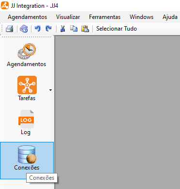
 Conexões
Conexões
- Ao selecionar esta opção o sistema exibe uma tela onde é possível incluir, alterar, excluir, atualizar conexões e exibir depedências.
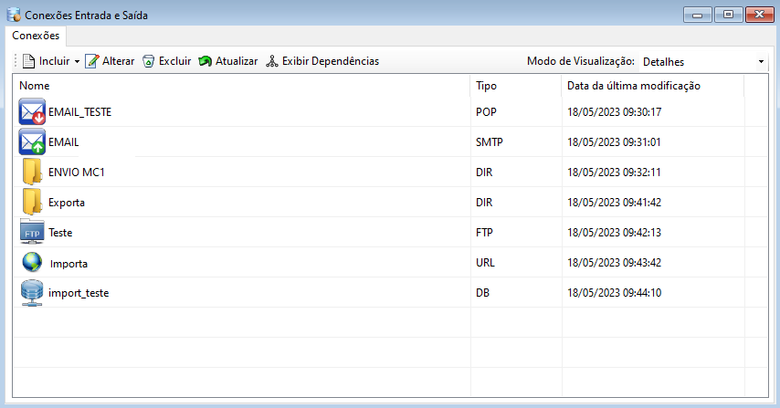
Ao selecionar o botão "Incluir"  o sistema exibe uma lista para que seja escolhido o tipo de conexão desejada. Cada conexão possui um tipo de configuração diferente sendo necessário que seja escolhido o tipo de conexão correto para o resultado desejado.
o sistema exibe uma lista para que seja escolhido o tipo de conexão desejada. Cada conexão possui um tipo de configuração diferente sendo necessário que seja escolhido o tipo de conexão correto para o resultado desejado.
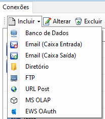
- Selecione a opção "Banco de Dados" para configurar um Banco de Dados. Ao selecionar o sistema irá exibir uma tela para cadastro, preencha o nome, selecione o tipo de banco e preencha a string de conexão, após preencher os dados necessários selecione o botão "Testar" para verificar se a conexão está correta e em seguida selecione o botão "Ok" para finalizar e salvar a nova conexão.
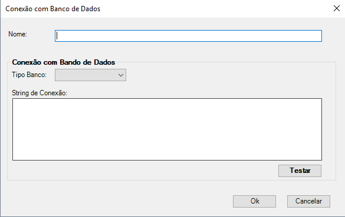
- Selecione a opção "E-mail (Caixa de Entrada)" para configurar um E-mail. Ao selecionar o sistema irá exibir uma tela para cadastro, preencha o nome, e configure a caixa de entrada, após preencher os dados necessários selecione o botão "Testar" para verificar se a conexão está correta e em seguida selecione o botão "Ok" para finalizar e salvar a nova conexão.
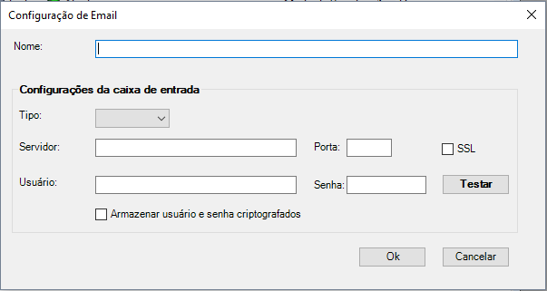
- Selecione a opção "E-mail (Caixa de Saída)" para configurar um E-mail SMTP. Ao selecionar o sistema irá exibir uma tela para cadastro, preencha o nome, e configure o envio de E-mail, após preencher os dados necessários selecione o botão "Testar" para verificar se a conexão está correta e em seguida selecione o botão "Ok" para finalizar e salvar a nova conexão.
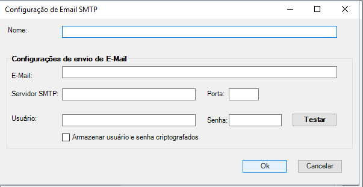
Além disso, uma tela aparece solicitando a inserção de um e-mail para receber uma mensagem como parte do teste.
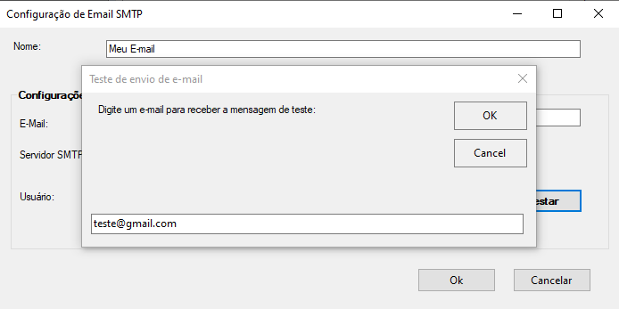
- Selecione a opção "Diretorio" para configurar um Diretório. Ao selecionar o sistema irá exibir uma tela para cadastro, preencha o nome, selecione o diretório desejado e se utilizará credenciais especificas ou não, após preencher os dados necessários selecione o botão "Testar" para verificar se a conexão está correta e em seguida selecione o botão "Ok" para finalizar e salvar a nova conexão.
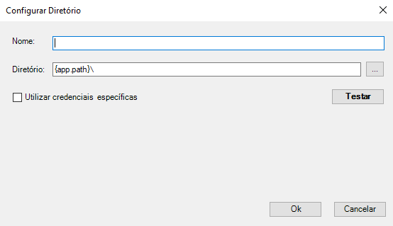
- Selecione a opção "FTP" para configurar uma FTP. Ao selecionar o sistema irá exibir uma tela para cadastro, preencha o nome, e configure o FTP, após preencher os dados necessários selecione o botão "Testar" para verificar se a conexão está correta e em seguida selecione o botão "Ok" para finalizar e salvar a nova conexão.
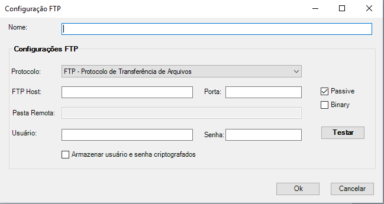
- Selecione a opção "URL Post" para configurar um Web Post. Ao selecionar o sistema irá exibir uma tela para cadastro, preencha o nome, url do post e timeout, também é necessário ir preencher a autorização caso haja alguma, o cabeçalho e conteúdo. Após preencher os dados necessários selecione o botão "Ok" para finalizar e salvar a nova conexão.
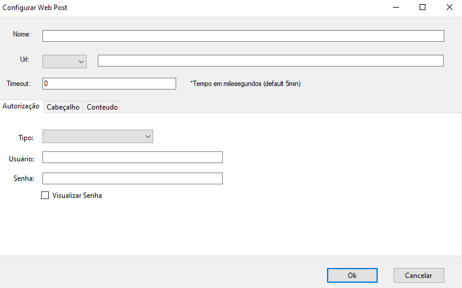
- Selecione a opção "MS OLAP" para incluir uma conexão com Analysis Service. Ao selecionar o sistema irá exibir uma tela para cadastro, preencha o nome, tipo de autenticação e configure o host da conexão, após preencher os dados necessários selecione o botão "Testar" para verificar se a conexão está correta e em seguida selecione o botão "Ok" para finalizar e salvar a nova conexão.
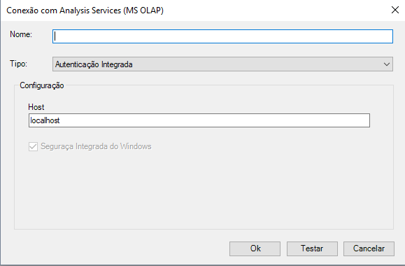
- Selecione a opção "EWS OAuth" para configurar o método de autenticação. Ao selecionar o sistema irá exibir uma tela de preenchimento, insira o nome a configuração e insira as informações necessárias nela.
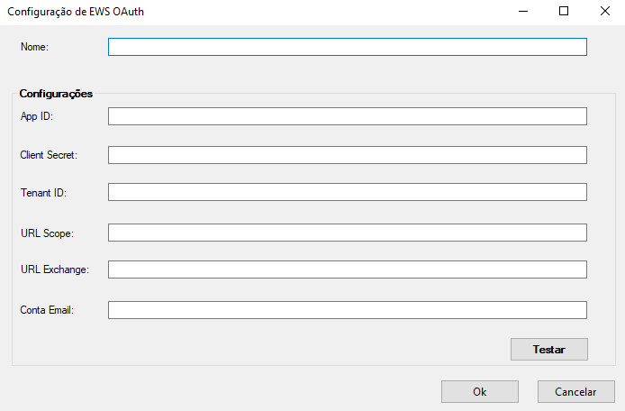
Para Alterar  uma conexão, selecione a conexão desejada podendo ser de banco de dados, entrada de e-mail, saída de e-mail, diretório, FTP, URL Rost e MS OLAP. Cada conexão possui um cadastro onde deve-se escolher a conexão correta para que a alteração seja correta e traga o resultado esperado. Também é possível Duplicar conexão já criada, visando simplificar o processo e produtividade.
uma conexão, selecione a conexão desejada podendo ser de banco de dados, entrada de e-mail, saída de e-mail, diretório, FTP, URL Rost e MS OLAP. Cada conexão possui um cadastro onde deve-se escolher a conexão correta para que a alteração seja correta e traga o resultado esperado. Também é possível Duplicar conexão já criada, visando simplificar o processo e produtividade.
- Para alterar uma conexão com "Banco de Dados", selecione a conexão desejada. Ao selecionar o sistema irá exibir uma tela para que seja realizada a alteração, altere os campos desejados e selecione o botão "Testar" para verificar se está correto e selecione o botão "Ok" para salvar e fechar a janela.
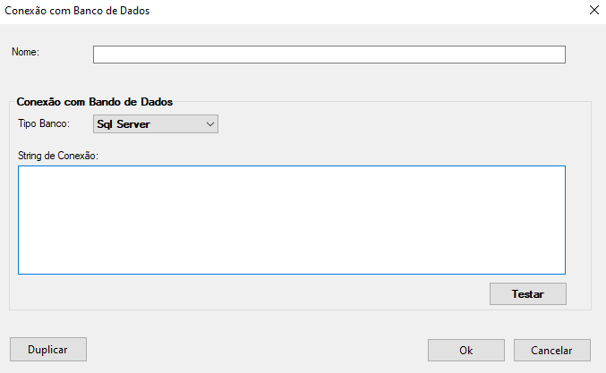
- Para alterar uma conexão com "E-mail (Caixa de Entrada)", selecione a conexão desejada. Ao selecionar o sistema irá exibir uma tela para que seja realizada a alteração, altere os campos desejados e selecione o botão "Testar" para verificar se está correto e após selecione o botão "Ok" para salvar e fechar a janela.
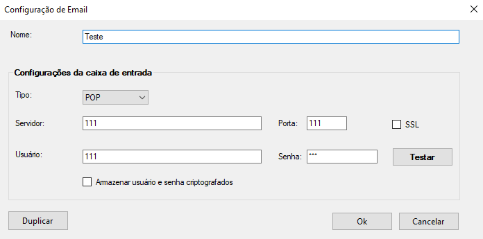
- Para alterar uma conexão com "E-mail (Caixa de Saída)", selecione a conexão desejada. Ao selecionar o sistema irá exibir uma tela para que seja realizada a alteração, altere os campos desejados e selecione o botão "Testar" para verificar se está correto e após selecione o botão "Ok" para salvar e fechar a janela.
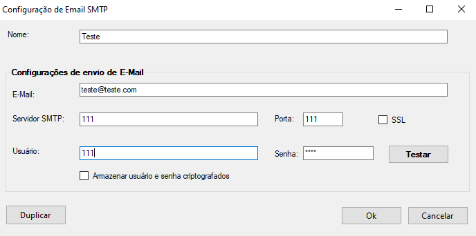
- Para alterar uma conexão com "Diretório", selecione a conexão desejada. Ao selecionar o sistema irá exibir uma tela para que seja realizada a alteração, altere os campos desejados e selecione o botão "Testar" para verificar se está correto e após selecione o botão "Ok" para salvar e fechar a janela.
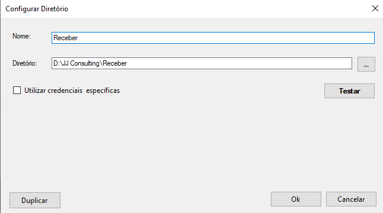
- Para alterar uma conexão com "FTP", selecione a conexão desejada. Ao selecionar o sistema irá exibir uma tela para que seja realizada a alteração, altere os campos desejados e selecione o botão "Testar" para verificar se a conexão está correta e em seguida selecione o botão "Ok" para salvar e fechar a janela.
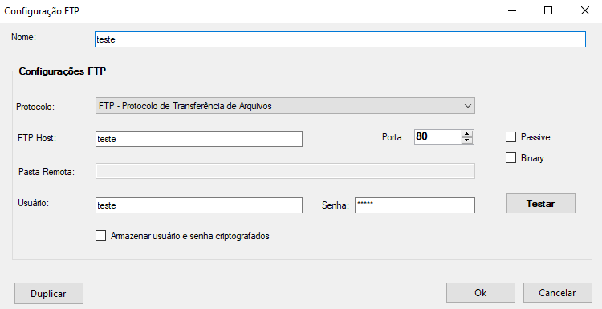
- Para alterar uma conexão com "URL Post", selecione a conexão desejada. Ao selecionar o sistema irá exibir uma tela para que seja realizada a alteração, altere os campos desejados e selecione o botão "Ok" para salvar e fechar a janela.
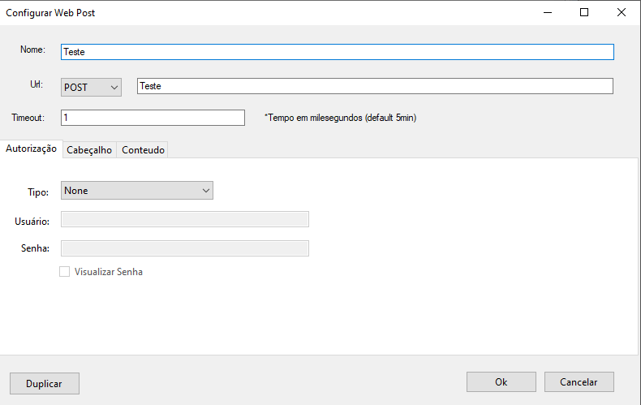
- Para alterar uma conexão com "Analysis Services (MS OLAP)", selecione a conexão desejada. Ao selecionar o sistema irá exibir uma tela para que seja realizada a alteração, altere os campos desejados e selecione o botão "Testar" para verificar se está correto e após selecione o botão "Ok" para salvar e fechar a janela.
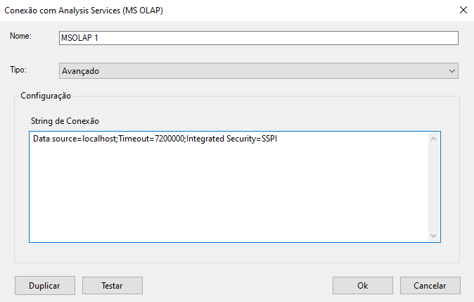
- Para alterar uma conexão com "EWS OAuth", selecione a conexão desejada. Ao selecionar o sistema irá exibir uma tela de preenchimento, insira o nome a configuração e insira as informações necessárias nela.
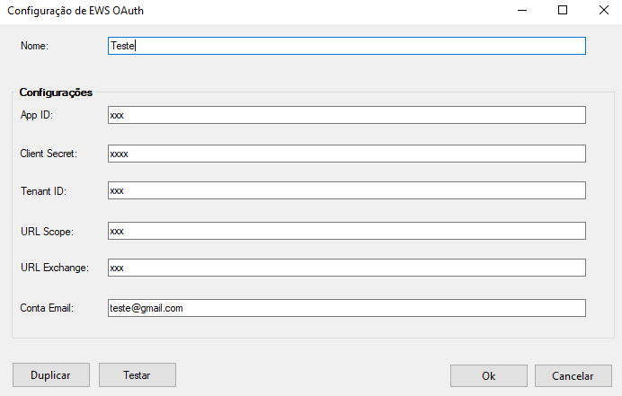
Para excluir uma conexão selecione o arquivo desejado e após selecione o botão Excluir  , após selecionar o sistema irá exibir uma mensagem de confirmação, selecione botão "Ok" para confirmar e excluir.
, após selecionar o sistema irá exibir uma mensagem de confirmação, selecione botão "Ok" para confirmar e excluir.
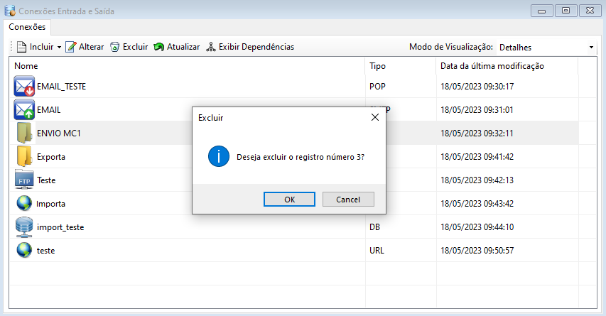
Para atualizar a lista de conexões selecione o botão Atualizar  , após selecionar o sistema irá atualizar a lista sendo possível dar continuidade nas atividades normalmente.
, após selecionar o sistema irá atualizar a lista sendo possível dar continuidade nas atividades normalmente.
Para exibir dependências da tarefa selecionada, selecione o botão Exibir Dependências  , após selecionar o sistema irá exibir a lista de dependências da tarefa caso exista alguma.
, após selecionar o sistema irá exibir a lista de dependências da tarefa caso exista alguma.
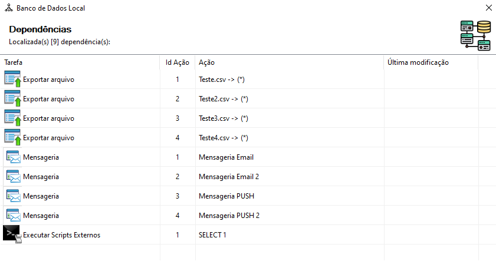